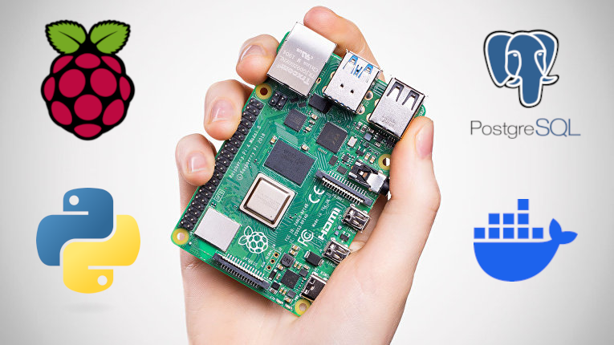

I walk through my full setup for running a geospatial PostgreSQL database (with PostGIS) on a Raspberry Pi using Docker, and connecting to it from Python. This lets me run everything locally for data analysis, with full control.
For my crime mapping project, one of the biggest performance bottlenecks was pulling data live from the API, especially when requesting multiple months of data. So, I decided to move everything to a local PostgreSQL database with PostGIS for spatial support.
Rather than using a laptop 24/7 or paying for a cloud server, I used a Raspberry Pi 4 I had lying around. It’s cheap, quiet, and perfect for running a lightweight server at home. In this post, I will walk through my exact setup so you can replicate it.

My app used to fetch data dynamically from the UK Police. But:
By using PostgreSQL + PostGIS locally, I get:
And all of this runs quietly on a Raspberry Pi 4 next to my router.
To install an operating system (OS) on a Raspberry Pi, you need an SD Card and the Raspberry Pi Imager, which you can download from here.
With the Raspberry Pi Imager, you can flash the SD Card like this:
Ctrl+Shift+X for advanced settings: pi4.local myuser mypassword You can notice that I used an Ubuntu Server as OS instead of the recommended Raspberry Pi OS. This is because this Raspberry Pi will only run the PostgreSQL server and I do not want any overhead from running a full OS.
Once the SD card is flashed, remove it and plug it into the Raspberry Pi.
After booting the Pi, connect via SSH:
# Remove old IP from known_hosts (if you reused the Pi)
nano ~/.ssh/known_hosts
# Connect
ssh myuser@pi4.local
Then update the system:
sudo apt update && sudo apt upgrade -y
sudo apt install python-is-python3
Next, set up SSH keys for passwordless login:
ssh-keygen -t rsa -b 8192 -f ~/.ssh/pi4_rsa
ssh-copy-id -i ~/.ssh/pi4_rsa.pub myuser@pi4.local
Then for security, disable password SSH by running sudo nano /etc/ssh/sshd_config and changing the following lines:
PasswordAuthentication no
PubkeyAuthentication yes
Finally, restart the SSH daemon (server) in the Raspberry Pi.
sudo systemctl restart sshd
Now it’s time to install Docker. To do so, I would recommend following the instructions here. For your convenience, I put them here too:
sudo apt-get update
sudo apt-get install ca-certificates curl
sudo install -m 0755 -d /etc/apt/keyrings
sudo curl -fsSL https://download.docker.com/linux/ubuntu/gpg -o /etc/apt/keyrings/docker.asc
sudo chmod a+r /etc/apt/keyrings/docker.asc
Then add the Docker repo:
echo \
"deb [arch=$(dpkg --print-architecture) signed-by=/etc/apt/keyrings/docker.asc] https://download.docker.com/linux/ubuntu \
$(. /etc/os-release && echo "${UBUNTU_CODENAME:-$VERSION_CODENAME}") stable" | \
sudo tee /etc/apt/sources.list.d/docker.list > /dev/null
Install the latest version:
sudo apt-get install docker-ce docker-ce-cli containerd.io docker-buildx-plugin docker-compose-plugin
Optionally, you can also allow Docker to run without root privileges by running:
sudo groupadd docker
sudo usermod -aG docker $USER
Log out and back in, or reboot.
Since Raspberry Pi has an arm64 architecture, we need a Docker image that supports it. Browsing Docker Hub, I found the kartoza/postgis image, which comes with PostGIS pre-installed, so we do not need to create our own image.
First, I set some environment variables that will be used later (change the values as needed):
echo 'export DB_PASSWORD="mypassword"' >> ~/.bashrc
echo 'export DB_NAME="postgis"' >> ~/.bashrc
echo 'export DB_USER="postgres"' >> ~/.bashrc
echo 'export DB_PORT="5432"' >> ~/.bashrc
source ~/.bashrc
Then run the container using the environment variables that we set above:
docker run --name postgis-container \
-e POSTGRES_PASSWORD=$DB_PASSWORD \
-e POSTGRES_DB=$DB_NAME \
-e POSTGRES_USER=$DB_USER \
-p $DB_PORT:5432 \
-v postgis_data:/var/lib/postgresql/data \
--restart unless-stopped \
-d kartoza/postgis:16-3.4
Afterwards, you can run an interactive PostgreSQL terminal inside the container with:
docker exec -it postgis-container su postgres -c "psql"
Here you can create a new database or use the one initially created, as in any other PostgreSQL server. In my case, I did:
CREATE DATABASE crime_uk;
\c crime_uk
CREATE EXTENSION IF NOT EXISTS postgis;
CREATE TABLE IF NOT EXISTS crimes (
crime_id TEXT PRIMARY KEY,
month DATE,
reported_by TEXT,
falls_within TEXT,
longitude DOUBLE PRECISION,
latitude DOUBLE PRECISION,
location TEXT,
lsoa_code TEXT,
lsoa_name TEXT,
crime_type TEXT,
last_outcome_category TEXT,
context TEXT,
geom GEOMETRY(Point, 4326)
);
CREATE INDEX IF NOT EXISTS crimes_geom_idx ON crimes USING GIST (geom);
This SQL script creates the database crime_uk, then enables the PostGIS extension and creates a table with the geom column being a special PostGIS geometry column that stores the point location in the WGS84 coordinate system (SRID 4326). In addition, it indexes the geom column to accelerate spatial queries.
This part happens outside of Docker but still in the Ubuntu server. If you want to use another computer other than the Raspberry Pi to connect to the database, you will need to modify the pg_hba.conf inside the container. I do not need this, so I will not mention how to do it here, but a simple search in your favourite search engine can tell you how to do this.
The first step to connect is to get the container IP:
docker inspect postgis-container | grep IPAddress
Save it as an env variable (change 172.17.0.2 for your IP):
echo 'export DB_HOST="172.17.0.2"' >> ~/.bashrc
source ~/.bashrc
Then, you need to install the Python dependencies. I always recommend creating an environment:
sudo apt install python3-venv python3-pip libpq-dev
python3 -m venv envCrime
source envCrime/bin/activate
pip install pandas psycopg2 requests
NOTE: psycopg2 requires you to install libpq-dev. If you do not want to install it, you can use psycopg2-binary instead, which has precompiled binaries.
I will leave you with a simple example to create a connection using Python:
import psycopg2
import os
conn = psycopg2.connect(
dbname=os.getenv("DB_NAME"),
user=os.getenv("DB_USER"),
password=os.getenv("DB_PASSWORD"),
host=os.getenv("DB_HOST"),
port=os.getenv("DB_PORT")
)
cursor = conn.cursor()
cursor.execute("SELECT COUNT(*) FROM crimes;")
print(cursor.fetchone())
conn.close()
Now I (and hopefully you too) have a fully local geospatial database server that runs quietly on my desk and costs nothing to operate, aside from a bit of electricity.